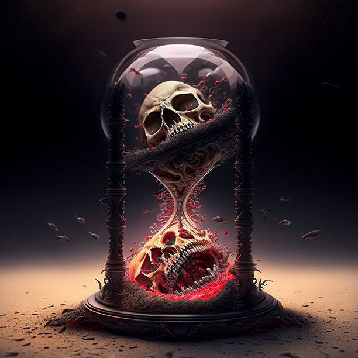

Adaga do Cristal Absoluto
Efeito
Esse artefato concede um grande aumento de vitalidade ao portador a partir de agora o jogador recebe + 1 de PV até o final da campanha para seu usuário.
×Esse artefato concede um grande aumento de vitalidade ao portador a partir de agora o jogador recebe + 1 de PV até o final da campanha para seu usuário.
×
Esse artefato concede ao portador um controle sobre a mácula, fazendo que o mesmo a envolva em suas técnicas de batalha, a partir de agora o jogador recebe + 1 de dano para suas habilidades ofensivas até o final da campanha.
×
O melhor amigo para se ter depois de uma taverna, arena, disputa, emboscada, perseguição, caçada e o que mais se encontrar pela jornada.Recupera 2 de PV. Pode ser utilizada antes de se movimentar.
×
Um livro capaz de absorver mácula e converter em poder. Esse artefato concede ao usuário o aumento de + 1 AM sempre que o mesmo receber quantias desse recurso.
×
Um colar com as capacidades de expulsar espíritos e impedir possessões. Esse artefato concede proteção contra os efeitos dos Fragmentos de Alma dos Lordes até o fim do jogo.
×
Esse artefato concede ao jogador a possibilidade de quando o mesmo morrer ele poderá reviver no mesmo lugar com os seus consumíveis. Caso escolha que sim, o espelho se quebra e o jogador renasce na mesma casa com o máximo de PV e todas as habilidades, além de ignorar o status de Corrompido. (Para ativá-lo novamente, é necessário o consumo de 50 AM).
×
Esse artefato concede a habilidade de destruir maldições, A Alnur fez esse artefato para que nem um Maculado pudesse se voltar contra ele, a qualquer momento que um Corrompido ou um General entrar em combate com o portador do Pingente do Distúrbio, o mesmo pode quebrar esse item e eliminar o alvo, destruindo a ligação da Mácula com o Hogi do indivíduo.
×
Alnur carregava consigo 4 Licores do Perpétuo na sua época de outubristas, seus poderes se assemelhavam aos dos deuses naquele período. Esse artefato concede ao portador, sempre que o mesmo receber um segundo consumível, o mesmo recupera uma habilidade à sua escolha.
×
Esse artefato concede ao portador uma habilidade de prever aonde a Mácula se encontra, agora até o fim do jogo o mesmo pode ignorar os efeitos dos eventos.
×
Os Crisois foram entregues a reis que buscavam poderes em troca do seu tempo de vida. Vinculado a um demônio esses seres eram imparáveis, porém quando um perecia o custo da morte era dobrado.Vínculo Indigno - O dono do Crisol se vincula a outro jogador. Toda vez que você ou o outro jogador receber uma cura ou recuperar uma habilidade, os dois receberam iguais, porém toda vez que um combate se encerra os dois ficaram com o mesmo PV do jogador do combate. Caso um morra, outro também morrerá.
×
Enriquecido com todo o conhecimento da Alma, nenhum outubrista fazia frente a Alnur, isso lhe deu tempo para criar o culto de Draqma e preparar o terreno para o momento mais sombrio que estará por vir. Sempre que o portador desse pergaminho chegar a um local do jogo que não seja um Lorde ou Discípulo ou Guardião. O mesmo poderá reescrever o futuro e receber uma nova escolha, ao chegar nos locais do mapa, o jogador pode decidir se quer enfrentar o inimigo a frente ou evento ou a descoberta, caso não, um novo será dado a ele aleatoriamente respeitando o local que ele esteja. (Ex Inimigo Comum só pode ser trocado por Inimigo Comum, e assim para todos) Só se pode usar essa habilidade uma vez por turno.
×
Alnur enganou todos para poder descer para o plano material, porém algo não fazia sentido, ele precisava de uma fonte de poder gigantesca para romper o véu, muito tempo depois os Yerakis descobriram que uma entendida do plano de Orcimones também havia sumido. Enquanto o jogador permanecer com esse artefato, ele reduzirá todo dano recebido em um até o mínimo de 1.
×